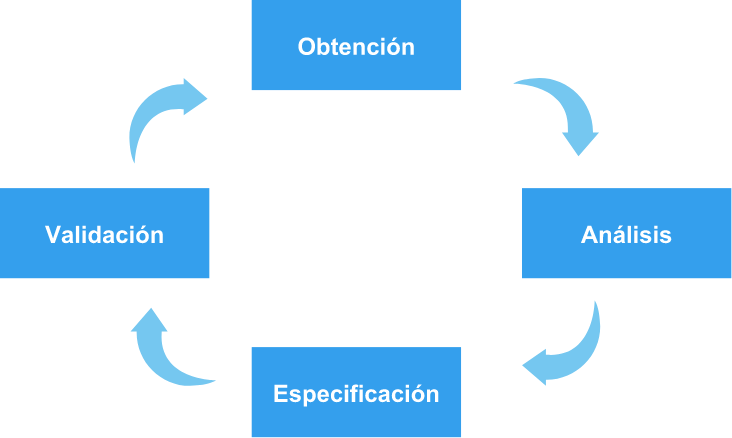
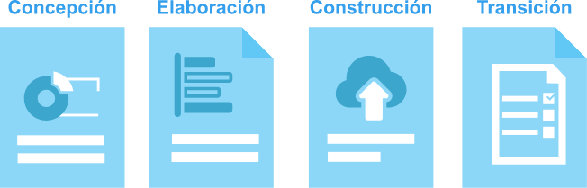
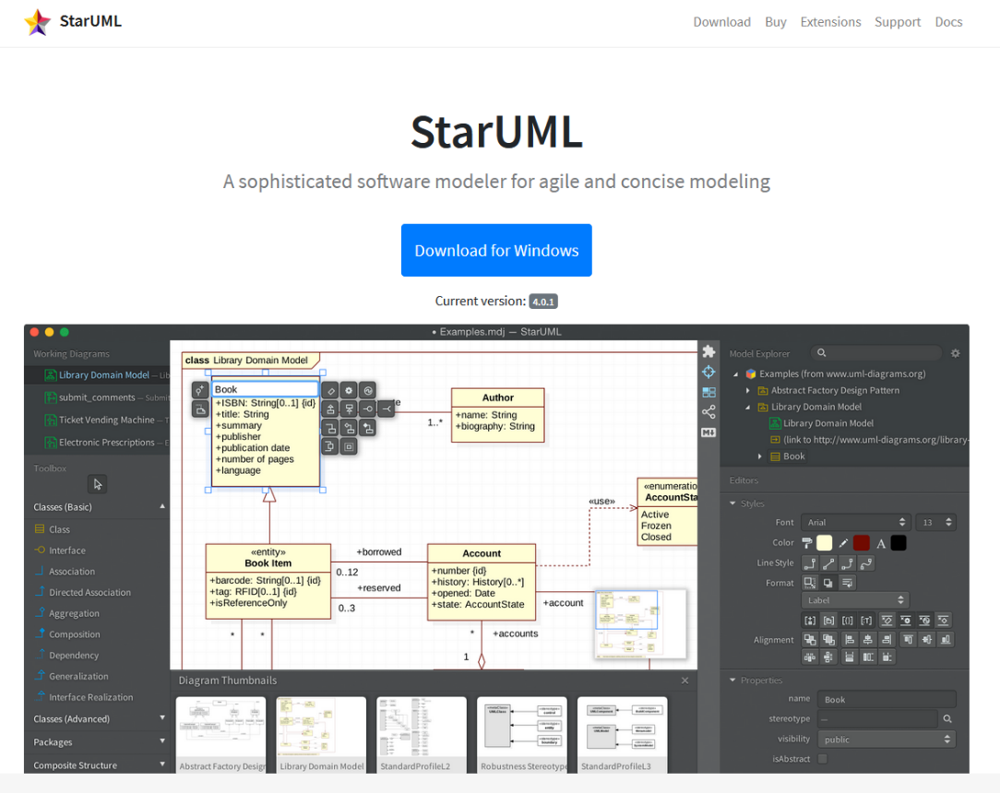
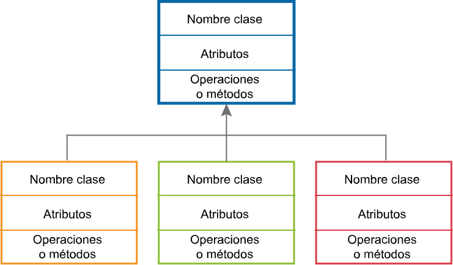
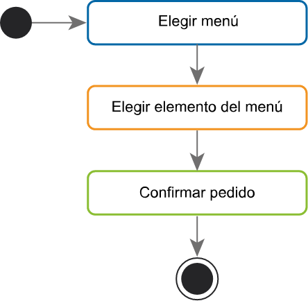
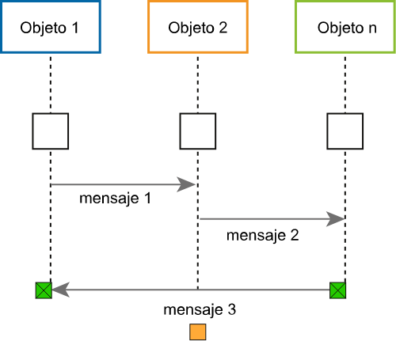
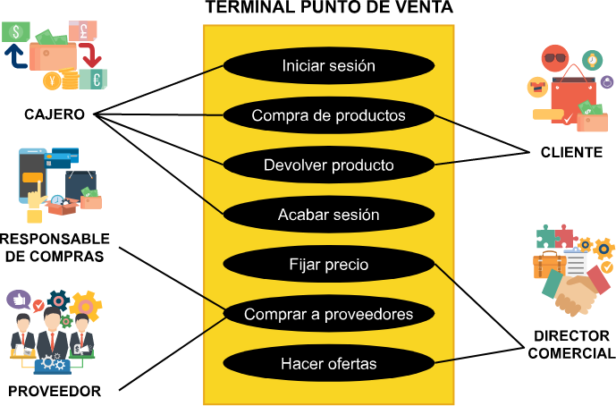
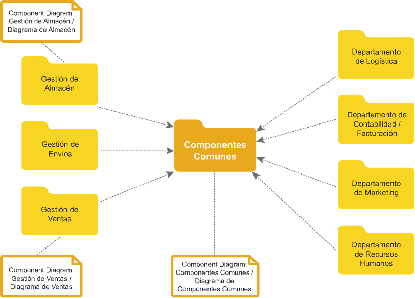

Introducción
Para el desarrollo de un software, es necesario realizar una contextualización de los diferentes temas que se abordarán en este componente formativo. Es esencial conocer los elementos principales para este proceso, las fases en que se desarrollan, las metodologías que se han venido trabajando y las que actualmente tienen mayor fuerza (métodologías ágiles), las cuales permiten obtener un software de alta calidad, se detallarán los requerimientos funcionales, como los no funcionales; los cuales son esenciales para que se cumpla en gran medida el éxito del desarrollo del proceso. De esta forma se pretende alcanzar los resultados de aprendizaje dispuestos en este material como son planear las actividades de un proceso de software, determinar los requisitos funcionales del software, utilizar los diagramas UML para visualizar el sistema desde varias perspectivas, modelar datos a través de una base de datos relacional y evaluar la utilidad y beneficios de los artefactos sugeridos por una metodología de desarrollo de software.
1. Desarrollo de software
1.1 Concepto
El proceso de software trata todos los aspectos del desarrollo de software, desde la primera etapa de la especificación de requerimientos hasta el mantenimiento del sistema después de que se pone en marcha. La mayoría de las organizaciones han diseñado sus propios procesos de desarrollo de software.
¿Qué es el proceso del software?
Según el SWEBOK © el proceso del software son todas las actividades llevadas a cabo por los ingenieros de software para desarrollar, mantener y operar software. Estas actividades incluyen: levantamiento de requerimientos, diseño, construcción, pruebas, configuración, entre otras. (Bourque,2014).
Es este enfoque el que hace que el desarrollo de software pase de ser una tarea artesanal a un proceso industrial más sistemático, cuantificable y predecible.
Sin este enfoque de proceso industrial sería muy difícil construir sistemas complejos como por ejemplo un sistema autorizador de pagos o un sistema de punto de venta (POS), entre otros.
La crisis del software
A finales del la década de los sesentas la industria del software llegó a la conclusión que la complejidad del mismo y la creciente demanda por un número mayor de aplicaciones superaba las habilidades y conocimientos que los programadores tenían en ese momento.
Lo anterior era un corolario de los problemas más comunes que se presentaban en los proyectos informáticos a saber:
El software quedaba inconcluso o el proyecto era abandonado.
El software tomaba más tiempo y costaba más de lo estimado.
Una vez creado el software era imposible o muy costoso darle mantenimiento.

El software no cumplía con las expectativas del cliente.
Las anteriores conclusiones fueron compiladas en una conferencia de la OTAN llevaba a cabo en Alemania (NATO,1968) donde por primera vez se usó el término “Ingeniería del Software”.
A partir de entonces la ingenería del software es reconocida como una disciplina independiente cuyas técnicas y procedimientos han permitido a este proceso llegar a los niveles que hoy en día se tienen.
La ingeniería del software
Es la aplicación de un enfoque sistemático, disciplinado y cuantificable al desarrollo, operación y mantenimiento del software (BOURQUE, 2014).
Se puede decir que la ingeniería del software se encarga de aplicar técnicas usadas en otras ámbitos de la ingeniería para lograr desarrollar productos de software que cumplan con los requerimientos del cliente, estén dentro del presupuesto y tengan la duración estimada sin importar su complejidad.
La ingeniería del software es promovida por la Computer Society (www.computer.org) de la IEEE quienes han creado el SWEBOK (Software Enginieering Body of Knowledge) que se considera la biblia de esta disciplina porque engloba sistemáticamente los diferentes autores, contenidos, técnicas y mejores prácticas de la disciplina en un solo libro.
1.2 Proceso de desarrollo de software
Para aplicar un enfoque sistemático al proceso de software se ha propuesto una serie de actividades que pueden variar según el autor en las siguientes (PRESSMAN, 2010): comunicación, planeación, modelado, construcción y despliegue.
En su conjunto estas etapas conformarán lo que se conoce como el ciclo de vida del software.
Estas actividades estructurales o fundamentales van acompañadas o apoyadas de otras actividades transversales o sombrilla (PRESSMAN, 2010) que ocurren a lo largo del proceso del software. Ejemplo de estas actividades son: aseguramiento de la calidad, administración de riesgos y gerencia de proyecto, entre otras.
Actividades de un proceso de software
a. Especificación de requerimientos
En esta fase los interesados en el proyecto o stakeholders acuerdan y establecen los requerimientos que el software como producto debe cumplir.
Esta actividad se puede descomponer en las siguientes etapas (SOMMERVILLE,2005):
Obtención de requerimientos
En esta etapa se hace un inventario de los requerimientos que debe cumplir el software a desarrollar. Se apoya en entrevistas, cuestionarios, recolección de datos a los interesados claves del proyecto. Al final estos requerimientos son consolidados para entregarlos a la siguiente etapa.
Análisis de requerimientos
En esta etapa se determina si un requerimiento es viable dentro de las restricciones tecnológicas, de costo y tiempo que tienen todos los proyectos. El analista deberá entender muy bien el requerimiento y asegurar que el mismo sea único, medible y alcanzable, entre otros.
Especificación de requerimientos
Una vez analizado el requerimiento ha sido individualizado se procede a realizar la especificación formal de manera que pueda ser socializado con todos los interesados del proyecto.
Validación de requerimientos
En esta etapa se procede a validar que los requerimientos cumplan con las características inherentes como son: no redundante, completo, alcanzable, entre otros.
Las anteriores etapas no necesariamente se deben hacer secuencialmente sino que se pueden hacer en forma iterativa (Figura 2), es decir, que un mismo requerimiento puede ser varias veces analizado, especificado o validado con el objeto que el conjunto de requerimientos finales sean más coherentes, no redundantes, completos y que cumplan con el objeto del desarrollo del software. (SOMMERVILLE, 2005).
b. Planeación
En esta etapa se especifica un plan para el proyecto que guiará a todos los interesados (stakeholders ) a conseguir el producto especificado en la primera fase.
Según Pressman la actividad de planeación es “un conjunto de prácticas administrativas y técnicas que permiten que el equipo de software defina un mapa mientras avanza hacia su meta estratégica y objetivos tácticos” (PRESSMAN, 2010).
Hoy en día los proyectos de desarrollo de software empresarial se están apoyando en los principios y prácticas proporcionados por el PMBOK del Project Management Institute (PMI) .
c. Modelado
En esta etapa los analistas o ingenieros de software crean un modelo abstracto del sistema a construir basado en los requerimientos funcionales y no funcionales planteados en la fase de especificación de requerimientos. Este modelo proporciona detalles sobre arquitectura del software, estructuras de datos, interfaces y componentes que se necesitan para implementar el sistema (PRESSMAN, 2010).
Son actividades propias de esta fase las siguientes (SOMMERVILLE, 2005):
Diseño de la arquitectura
Se identifican y documentan los subsistemas que forman el sistema y sus relaciones.
Especificación abstracta del sistema
Para cada subsistema se produce una especificación abstracta de sus servicios y las restricciones sobre las cuales debe funcionar.
Diseño de interfaces
Para cada subsistema se diseña y documenta su interfaz con otros subsistemas.
Diseño de componentes
Se asignan servicios a los componentes y se diseñan sus interfaces.
Diseño de las estructuras de datos
Se diseña en detalle y se especifica la estructura de datos que se utilizará en la implementación del sistema.
Diseño de algoritmos
Se diseñan en detalle y se especifican los algoritmos utilizados para proporcionar los servicios.
d. Desarrollo
En esta actividad ,también llamada construcción, se genera el código fuente en el lenguaje o lenguajes de programación seleccionados para el proyecto. El entregable de esta actividad además del código puede ser también un conjunto de parámetros o parametrización de software.
Son actividades de esta etapa las siguientes:
Codificación
Una vez creado el software era imposible o muy costoso darle mantenimiento.
Pruebas unitarias
El software no cumplía con las expectativas del cliente.
Esta actividad se puede apoyar también en herramientas de cuarta generación o CASE que generan código a partir de una especificación formal. Un ejemplo de este tipo de herramientas es GENEXUS (www.genexus.com) producida por una empresa uruguaya de software.
También se pueden usar sistemas integrados de desarrollo o IDE’s como ECLIPSE (www.eclipse.org) o Microsoft Visual Studio Code, entre otros.
En esta etapa es importante seguir algunos principios de programación (PRESSMAN, 2010):
Reducir la complejidad.
Anticiparse a la diversidad o cambios.
Facilitar las pruebas de software.
Ajustarse a la normatividad vigente para el sistema a desarrollar.
e. Implantación
En esta fase se lleva a cabo la puesta en marcha o salida en vivo del producto de software desarrollado una vez los requerimientos son validados y aceptados por el cliente.
Antes de la puesta en marcha se realiza una validación y prueba del software que consta de las siguientes actividades (SOMMERVILLE, 2005):
Posterior a la salida en vivo se pueden presentar situaciones que requieran algunas de las siguientes actividades propias del mantenimiento del software:
1.3 Metodologías tradicionales
También llamadas modelos de procesos de software son representaciones simplificadas de un proceso, se utilizan para explicar las diferentes perspectivas del desarrollo de software.
Modelos de procesos de software
Las actividades del proceso de software vistas en el numeral anterior fueron en un principio secuenciales y formaron parte del modelo en Cascada (PRESSMAN, 2010).
Sin embargo en la medida que los sistemas se hicieron más complejos surgieron nuevos enfoques como el modelo en espiral o modelos ágiles que pretendían disminuir costos o afrontar los riesgos e incertidumbres propios de los sistemas actuales donde los requerimientos no siempre están totalmente especificados o son muy susceptibles a cambios.
El programa ADSI se guiará por este modelo de procesos en cascada, no obstante, se exponen otros modelos a manera de ejemplo para que el estudiante tenga una visión más amplia y pueda profundizar más adelante.
a. Modelo en cascada
En este modelo las etapas del proceso a saber: especificación de requerimientos, modelado, desarrollo e implantación se dan de manera secuencial.
Este fue el primer modelo propuesto y sigue siendo el padre de los demás modelos de procesos.(PRESSMAN, 2010).
Este modelo es apropiado cuando los requerimientos de un sistema están claramente definidos con anticipación y no se espera que cambien en el transcurso de las demás etapas.
Su ventaja es que contempla toda la funcionalidad del sistema desde un principio.
Su desventaja es que los cambios posteriores o inclusión de nuevos requerimientos son muy costosos porque impactan todas las fases llevadas a cabo con anterioridad.
Por otra parte toma tiempo importante del equipo la formalización o documentación de cada actividad una vez se finaliza.
Ventaja
Contempla toda la funcionalidad del sistema desde un principio.
Desventaja
Cambios posteriores o inclusión de nuevos requerimientos son muy costosos porque impactan todas las fases llevadas a cabo con anterioridad.
Modelo en cascada
b. Modelos incrementales
Este modelo está pensado para cuando se requiere entregar un producto de software con una funcionalidad reducida que posteriormente se va incrementando hasta llegar finalmente a la versión deseada del producto. Los requerimientos nuevos que se van agregando en cada entrega se denominan incrementos.
Un ejemplo de este tipo es el modelo en espiral (PRESSMAN, 2010).
Ventaja
Cuenta con un producto básico pero funcional en un tiempo menor comparado con el modelo en cascada.
Desventaja
Algunos clientes temen que este proceso evolutivo de entregas se salga de control. (PRESSMAN, 2010).
Modelo en espiral Fuente: Pressman (2010)
c. Modelo de evolución de prototipos
Este modelo se apoya en los llamados prototipos o versiones primarias del producto de software al cual se quiere llegar. Estos prototipos evolucionan o se mejoran cada vez que se aplican las actividades del proceso de software: especificación, planeación, modelado, desarrollo, implantación. Lo anterior es llamado una iteración ( Figura 5 ).
La diferencia con el modelo incremental es que un prototipo se puede descartar por completo e iniciar con uno nuevo en cualquier etapa del proceso evolutivo o iterativo.
Ventaja
Desde el primer prototipo ya se puede tener la realimentación del cliente y se pueden corregir en etapas muy tempranas cualquier falencia que se presente.
Desventaja
No se puede estimar fácilmente el tiempo de finalización del proyecto.
Modelo en espiral Fuente: Pressman (2010)
1.4 Metodologías ágiles
Las metodologías ágiles, se han presentado como una solución a los problemas en el desarrollo de proyectos de software, que a lo largo del tiempo han venido presentando situaciones como: baja calidad, tiempos demasiado largos para desarrollar proyectos, han hecho que se busquen soluciones eficaces para las empresas.
Recientemente se han popularizado los modelos ágiles que combinan las estrategias de los modelos en cascada, incremental y prototipos.
Un ejemplo es el modelo SCRUM que está basado en el modelo incremental pero plantea, entre otros, unas técnicas o criterios para determinar cuando pasar a una siguiente versión del producto de software.
Estos modelos son apropiados cuando se anticipa que van a surgir cambios en los requerimientos a lo largo del proyecto y pretenden disminuir este impacto por un lado haciendo más liviano o ligero la formalización de las etapas del proceso del software y por otro haciendo énfasis en equipos de trabajo bastante cohesionados y motivados. (PRESSMAN, 2010).
Desventaja
Estas metodologías requieren un entrenamiento y disciplina en los equipos de trabajo que no es accesible para todas las empresas.
Modelo SCRUM
Modelo basado en componentes
Este modelo se apoya en software previamente desarrollado que se puede incorporar, parametrizar o configurar al proyecto en desarrollo y de este forma disminuir la cantidad de código a producir.
Algunos softwares modernos como SAP, ORACLE, SIESA, entre otros, suministran componentes para una amplia gama de procesos de negocio (contabilidad, nómina, inventarios, entre otros) los cuales se configuran de acuerdo a las necesidades específicas del cliente. Lo anterior evita que la actividad de desarrollo se haga desde cero y los desarrollos se realizan para llenar las brechas o “gaps” entre la funcionalidad que requiere el cliente y lo ofrecido por el proveedor.
Los componentes también pueden ser proporcionados a través de “frameworks” o librerías que también son código ya elaborado y que puede ser configurado, utilizado y en algunos casos modificado en esta fase de desarrollo. Ejemplo de estos frameworks son J2EE, Microsoft .Net, Laravel (PHP), AngularJS, entre otros.
Desventaja
No siempre el componente o módulo cumple con todos los requerimientos del cliente y en algunos casos las empresas limitan o disminuyen los requerimientos en favor de una mayor prontitud en la entrega del producto de software especificado.
El proceso unificado
Este proceso se basa en los modelos tradicionales ya expuestos como son cascada, prototipos e incrementales y hace énfasis en la utilización de casos de uso apoyados en el lenguaje UML para modelar los requerimientos del cliente (PRESMAN, 2010).
Está compuesto por cuatro fases: Concepción, elaboración, construcción y transición.
Al igual que los modelos ágiles el proceso unificado también afronta el desafío del cambio constante de los requerimientos y requiere de un entrenamiento al equipo de proyecto que no todas las empresas pueden acceder.
Lea sobre programación extrema (XP) que integra un rango de buenas prácticas de programación, en el capítulo 3, págs. 64-68 del siguiente libro:
1.5 Herramientas CASE
CASE (Computer Aided Software Engineering) son herramientas que pueden ayudar al analista a mejorar su trabajo, disminuyendo el tiempo de desarrollo de software y el costo, a cambio se aumenta la calidad del software y la productividad de quienes lo están desarrollando. Ver más información en el capítulo 1, pags. 30-32 del libro:
2. Requerimientos funcionales de software
2.1 Origen
Los requisitos funcionales se recolectan en los casos de uso, detallan que debe realizar el software para sus usuarios: aceptar, verificar y registrar datos, transformarlos, presentarlos, etc.
Introducción al UML
El lenguaje unificado de modelado (UML) nació de la unión de los métodos análisis y diseño orientado a objetos a finales de la década de 1980 principios de la década de 1990. Unifica los métodos de los siguientes autores Booch, Rumbaught y Jacobson. El UML es un lenguaje de modelado y no corresponde a un método de desarrollo de software o una técnica para el desarrollo de software. Es totalmente gráfico y en él se expresan los diseños del software desde la identificación de requerimientos hasta el diseño de interfaces y clases. A través de él se pueden esquematizar la estructura y el comportamiento del software.
Dentro de la esquematización de la estructura se encuentran los diagramas de casos de uso. El proceso unificado de desarrollo de software obtenido mediante la unión de los tres autores (Booch, Jacobson, Rumbaught), está centrado en los casos de uso, de ahí la importancia del lenguaje unificado de modelado que complementa, no sólo este modelo de proceso de desarrollo de software sino todos los modelos que quieran utilizarlo.
El UML también permite documentar todos los procesos de desarrollo del software, se comporta como un lenguaje común entre el cliente y el analista, donde a través de gráficos se representa lo que finalmente el cliente requiere.
En definitiva el UML es una herramienta para analistas funcionales (los que definen, lo que el programa debe hacer) y analistas programadores (los que construyen a través de programas esas funcionalidades), es un estándar en la industria del software aprobado por la ISO/IEC 19501:2005 Information Technology Open Distributed Processing Unified Modeling Language, que lo usan las empresas de medianos o grandes equipos de analistas y desarrolladores cuyo objetivo es analizar, planificar y documentar todo un proyecto de software.
2.2 Casos de uso
Los casos de uso describen las funcionalidades de los sistemas desde la visión del usuario. Se utilizan para mostrar la funcionalidad que el sistema que se está diseñando y que ofrecerá y que usuarios se comunicaran con el sistema para usar dicha funcionalidad. Es una técnica que consiste en hacer un diagrama con su respectiva notación.
Ejemplo de diagramas de casos de uso
También se denomina como el modelo de requisitos y complementa los requerimientos de un sistema software a desarrollar. Los casos de uso describen la funcionalidad que ofrecerá el sistema desde la perspectiva del usuario definiendo el ámbito del sistema y el conocimiento por parte del diseñador de lo que el usuario requiere. La descripción del caso de uso ofrece una interacción entre el usuario y el sistema. Estas descripciones están en forma de resumen o en forma más detallada en donde esta interacción se describe paso a paso.
2.3 Notación
De acuerdo con el estándar en la norma ISO/IEC 19501: 2005 los diagramas de caso de uso muestran tres aspectos del sistema: los actores, los casos de uso y los límites del sistema o subsistema.
Notación de los casos de uso
Los actores representan el rol que los usuarios, dispositivos u otros sistemas realizan cuando se comunican con el caso de uso particular del sistema.
Al momento de determinar los casos de uso se hace necesario identificar el actor. El actor es el nombre que se le da al usuario cuando desempeña ese papel. En figura anterior el actor es el Administrador, es un usuario que desempeña el rol de administrador. Los actores llevan a cabo los casos de uso. Un actor puede realizar varios casos de uso y un caso de uso puede ser realizado por varios actores.
Para identificar un actor solo es necesario visualizar los roles que interactuaran en el sistema.
2.4 Documentación
Los requerimientos funcionales deben documentarse por escrito para que puedan ser entendidos tanto por el analista como por el usuario final, para esto se utilizan herramientas que a través de diagramas y documentación de procesos, se crean planos similares a los que construyen los arquitectos para una obra de construcción.
Notación de los casos de uso
Los analistas se pueden apoyar en software para generar los casos de uso y documentarlos.
Para el desarrollo de este contenido se presenta el software Star UML, el cual incluye todos los diagramas de estructura y comportamiento del UML, adicionalmente en su última versión incluye la elaboración de diagramas de entidad relación y soporta la ingeniería inversa.
Para descargar la versión gratuita de este software el aprendiz debe ingresar a la página web staruml.io y en la parte superior derecha se selecciona la opción Download.
Página de descarga de Star UML
Esta aplicación puede ser usada en sistemas operativos Windows, Linux y Mac, sin embargo, la versión gratuita viene solo para Windows.
Para comprender un poco más la herramienta y generar el primer documento de requerimientos por casos de uso se propone estudiar el siguiente caso y ver los tutoriales propuestos.
Se retoma el caso del vendedor viajero.
Se requería que el vendedor genera la factura de venta y la envíe a través del sistema externo. El vendedor puede realizar búsquedas de las facturas, adicionalmente puede consultar cuanto ha vendido y cuanto hace falta para completar la meta por último el vendedor listar los clientes de su ruta correspondiente en el viaje…
3. El lenguaje unificado de modelado (UML)
3.1 Características
UML es un modelo propuesto como estándar de ISO, para la construcción de software orientado a objetos; consta de varios tipos de diagramas interconectados, dentro de los cuales se utilizan elementos del modelo, que sirven para representar diferentes aspectos de la estructura y la dinámica del software.
En este apartado se darán algunas pautas sobre el Lenguaje de Modelado Unificado (UML), el cual es utilizado para el desarrollo de proyectos, cuyo fin es conocer más a fondo los requerimientos del usuario y tener una mejor comunicación con el equipo de desarrollo.

UML es ante todo un lenguaje que se centra en la representación gráfica de un sistema. Este lenguaje indica cómo crear y leer los modelos, representando flujos de trabajo en elementos gráficos.
Dentro de las características del lenguaje de modelado UML:

Visualizar: UML permite modelar de una forma gráfica un sistema de forma que otro lo puede entender.
Especificar: UML permite especificar cuáles son las características de un sistema antes de su desarrollo.
Construir: por medio de los modelos especificados se pueden construir los sistemas diseñados.
Documentar: los propios elementos gráficos sirven como documentación del sistema desarrollado, lo cual ayudará al mantenimiento de las soluciones conceptuales en el transcurso del tiempo.
Un modelo UML está compuesto por tres tipos de bloques de construcción:
Elementos o partes: los elementos son abstracciones de cosas reales o ficticias (objetos, acciones, personas, sistemas) que pueden relacionarse. Tienen identidad y se distinguen entre ellos.
Relaciones o acciones: relacionan los elementos entre sí, hacen que los sistemas tengan funcionalidad, que adquieran vida.
Diagramas o diseños: reflejan gráficamente el comportamiento y las relaciones entre los elementos.
Todo sistema puede ser representado gráficamente mediante modelos empleando UML el cual soporta sus diseños usando diagramas que facilitan el entendimiento, trazabilidad y comprensión entre sus componentes brindando claridad y calidad en la información presentada a los diversos actores involucrados en la distribución de información que requiere ser procesada por un sistema o flujo de trabajo propio de una organización empresarial.
3.2 Diagramas tipo UML
En este lenguaje unificado, se toman en cuenta varios diagramas: casos de uso, diagrama de clases, de secuencia, estos son algunos de los más importantes dentro del proceso de desarrollo y que ayudan al analista y al usuario a unificar ideas de lo que se desea implementar.
Un diagrama es la representación gráfica de un conjunto de elementos con sus relaciones, ofreciendo una vista del sistema a modelar. Para poder representar correctamente un sistema, UML ofrece varios tipos de diagramas que permiten visualizar un sistema desde varias perspectivas. UML incluye los siguientes diagramas:
Diagrama de clases
Es el diagrama más común a la hora de describir el diseño de los sistemas orientados a objetos.
El diagrama de clases muestra un conjunto de clases, atributos, operaciones, interfaces y sus relaciones.
Diagrama de actividades
El diagrama de actividades permite mostrar la secuencia de las acciones de varios objetos y seleccionar el orden en que se harán las cosas.
Representa los procesos de negocios de alto nivel, incluidos el flujo de datos. También puede utilizarse para modelar lógica compleja y/o paralela dentro de un sistema.
Un diagrama de actividades es la versión UML de un diagrama de flujo y se usan para analizar procesos.
Diagrama de secuencias
En el diagrama de secuencia se muestran las clases a lo largo de la parte superior y los mensajes enviados entre esas clases, modelando un solo flujo a través de los objetos del sistema.
Un diagrama que representa una interacción, poniendo el foco en la secuencia de los mensajes que se intercambian, junto con sus correspondientes ocurrencias de eventos en las líneas de vida.
Diagrama de casos de uso
Un diagrama que muestra las relaciones entre los actores y el sujeto (sistema), y los casos de uso.
Modela la funcionalidad del sistema según la percepción del usuario externo (actor) y las transacciones entre los actores y el sistema.
Los diagramas de casos de uso son responsables principalmente de documentar los macrorrequisitos del sistema. Piense en los diagramas de casos de uso como la lista de las funcionalidades que debe proporcionar el sistema.
Diagrama de componentes
Representa los componentes que conforman una aplicación, sistema o empresa. Los componentes, sus relaciones, interacciones y sus interfaces públicas.
En esta vista se modelan los componentes del sistema, a partir del cual se construye la aplicación. Son importantes para construir sistemas más grandes a partir de partes pequeñas.
Diagrama de componentes
Representa los componentes que conforman una aplicación, sistema o empresa. Los componentes, sus relaciones, interacciones y sus interfaces públicas.
En esta vista se modelan los componentes del sistema, a partir del cual se construye la aplicación. Son importantes para construir sistemas más grandes a partir de partes pequeñas.
| Diagrama | Descripción |
| Diagrama de estado | Un diagrama de estados muestra el estado cambiante o dinámica de un objeto. Son importantes en el modelado de comportamiento de una interfaz, clase ante los eventos disparadores del objeto. Cada estado modela un periodo de tiempo, durante la vida de un objeto. Cuando ocurre un evento, se puede desencadenar una transición que lleve el objeto a un nuevo estado. |
| Diagrama de despliegue físico | Un diagrama de despliegue físico muestra cómo y dónde se desplegará el sistema. Las máquinas físicas y los procesadores se representan como nodos y la construcción interna puede ser representada por nodos o artefactos embebidos. Como los artefactos se ubican en los nodos para modelar el despliegue del sistema, la ubicación es guiada por el uso de las especificaciones de despliegue. En este tipo de diagrama se muestran los tipos de nodos del sistema y los tipos de componentes que contienen. Aquí el nodo se visualiza como un cubo. |
| Diagrama de objetos | Un diagrama que presenta los objetos y sus relaciones en un punto en el tiempo. Un diagrama de objetos se puede considerar como un caso especial de un diagrama de clases o un diagrama de comunicaciones. |
| Diagrama de estructura de composición | Representa la estructura interna de un clasificador (tal como una clase, un componente o un caso de uso), incluyendo los puntos de interacción de clasificador con otras partes del sistema. Un uso adicional que se puede dar a los diagramas de estructura compuesta es para mostrar las partes que colaboran, por ejemplo, en un caso de uso. |
| Diagrama de paquetes | Diagrama que permite la organización de elementos de modelado en paquetes y las dependencias entre ellos. Los usos más comunes para los diagramas de paquete son para organizar diagramas de casos de uso y diagramas de clase, a pesar de que el uso de los diagramas de paquete no es limitado a estos elementos UML. |
| Diagrama de comunicaciones | Diagrama que describen los mensajes que transmiten los objetos y muestran las asociaciones que existen entre las clases. Modela las interacciones entre objetos en términos de mensajes en secuencia. |
| Diagrama de tiempos | Diagrama utilizado para mostrar el cambio en el estado o valor de uno o más objetos en el tiempo o en su línea de vida, en respuesta a los eventos o estímulos recibidos. Los eventos que se reciben se anotan, a medida que muestran cuándo se desea mostrar el evento que causa el cambio en la condición o en el estado. |
3.3 Caso de estudio
4. Construcción de diagramas UML
4.1 Construcción de diagramas UML con herramienta DIA
Glosario
Case:computer Aided Software Engineering. Creación de software asistido por computador.
Caso de uso:indica una función que el sistema debe proveer.
Clases:unidad básica que agrupa una colección de objetos.
Framework:conjunto de componentes o módulos de software que apoyan una o más etapas del proceso de desarrollo de software.
Interfaz de usuario:la interfaz de usuario es el medio con que el usuario puede comunicarse con una máquina, un equipo o una computadora, y comprende todos los puntos de contacto entre el usuario y el equipo. Normalmente suelen ser fáciles de entender y fáciles de accionar.
Mockup:dibujo a mano alzada que apoya el entendimiento de un problema, situación o requerimiento
SCRUM:es un proceso en el que se aplican de manera regular un conjunto de buenas prácticas para trabajar colaborativamente, en equipo, y obtener el mejor resultado posible de un proyecto. Estas prácticas se apoyan unas a otras y su selección tiene origen en un estudio de la manera de trabajar de equipos altamente productivos.
UML:unified Modeling Language, es un lenguaje estandarizado que se utiliza para visualizar los elementos de un sistema de software, compuesto por diagramas que representan elementos estáticos y dinámicos del sistema.
Material complementario
| Nombre del documento o material | Tipo de material | Enlace del recurso |
|---|---|---|
| UPM (2014.) Metodologías ágiles. El proceso SCRUM | Video | Ver |
| Fernando Pereñiguez(2013) Ingeniería del Software II - Modelado de requisitos con UML (casos de uso) | Video | Ver |
| Fernando Pereñiguez.(2013).Tipos de relaciones en UML | Video | Ver |
| Jorge Luis Agile. (2019). Scrum en menos de 7 minutos | Video | Ver |
| Fernando Pereñiguez.(2013). Ingeniería del Software II - Modelado de clases con UML | Video | Ver |
| Fernando Pereñiguez(2013). Introducción al modelado del software. | Video | Ver |
Referencias bibliográficas
Campderrich Falgueras, B. (2013). Ingeniería del software. Editorial UOC. https://elibro-net.bdigital.sena.edu.co/es/ lc/senavirtual/titulos/56294
E.Kendall, K. (2011). Análisis y diseño de sistemas. (8a. ed.) Pearson Educación. http://www.ebooks7-24.com.bdigital.sena.edu.co/?il=3285
Fossati, M. (2017). Introducción a UML: Lenguaje para modelar objetos. https://books.google.com.co/books?id=vrvbDgAAQBAJ&printsec=frontcover&dq=lenguaje+unificado+de+modelado&hl=es&sa=X&ved=2ahUKEwj8-ujc2f3sAhWBTd8KHeRxBLwQ6AEwAnoECAQQAg#v=onepage&q&f=false
Lainez, J. (2015). Desarrollo de Software Ágil: Extremme Programming y Scrum. 2ª Edición. https://books.google.com.co/books?id=TxRpCwAAQBAJ&printsec=frontcover&dq=metodologias+agiles&hl=es&sa=X&ved=2ahUKEwjFyvT82v3sAhUQhOAKHYQICJgQ6AEwAHoECAQQAg#v=onepage&q&f=false
Proyectos agiles.org. Qué es SCRUM. https://proyectosagiles.org/que-es-scrum/
Ramos, D. (2016). Desarrollo de Software: Requisitos, Estimaciones y Análisis. 2 Edición. https://books.google.com.co/books?id=tBaYCwAAQBAJ&printsec=frontcover&dq=requerimientos+funcionales+de+software&hl=es&sa=X&ved=2ahUKEwjEgaCv3P3sAhWCTd8KHQ0eCKYQ6AEwBXoECAYQAg#v=onepage&q=requerimientos%20funcionales%20de%20software&f=false
Sommerville, I. (2011). Ingeniería de software. (9a. ed.) Pearson Educación. http://www.ebooks7-24.com.bdigital.sena.edu.co/?il=3313
The Blokehead. (2016). Scrum - ¡Guía definitiva de prácticas ágiles esenciales de Scrum!. https://books.google.com.co/books?id=T24eDQAAQBAJ&printsec=frontcover&dq=metodologias+agiles&hl=es&sa=X&ved=2ahUKEwjFyvT82v3sAhUQhOAKHYQICJgQ6AEwAnoECAYQAg#v=onepage&q&f=false